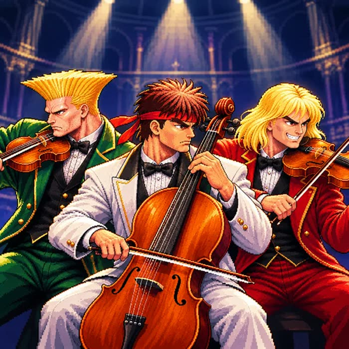

Nintenphonia
Orchestral video game music

Street Symphony II
Get this album
1
▶
Akuma
2
▶
Barlog
3
▶
Blanka
4
▶
Cammy
5
▶
Character Select
6
▶
Chun Li
7
▶
Dee Jay
8
▶
Dhalsim
9
▶
E-Honda
10
▶
Fei Long
11
▶
Guile
12
▶
Ken
13
▶
Main Theme
14
▶
Mr. Bison
15
▶
Ryu Ending
16
▶
Ryu
17
▶
Sagat
18
▶
T-Hawk
19
▶
Vega
20
▶
Zangief
20-second previews.